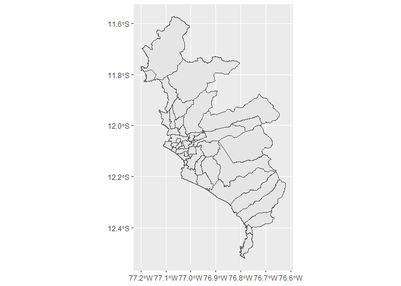

The goal of perumapas is to have an easy way to draw maps with peruvian shapes.
Installation
You can install the released version of perumapas from the calderonsamuel r-universe with:
install.packages("perumapas", repos = 'https://calderonsamuel.r-universe.dev')Example
This is a basic example which shows you how to solve a common problem:
library(perumapas)
library(ggplot2) # for plotting
library(dplyr) # for filtering
#>
#> Attaching package: 'dplyr'
#> The following objects are masked from 'package:stats':
#>
#> filter, lag
#> The following objects are masked from 'package:base':
#>
#> intersect, setdiff, setequal, union
library(sf) # obligatorio!
#> Linking to GEOS 3.9.1, GDAL 3.2.1, PROJ 7.2.1You can create maps easily.

You have the ubigeo field to easily join/merge with another dataset.
head(mapa_distrital, 10)
#> Simple feature collection with 10 features and 4 fields
#> Geometry type: MULTIPOLYGON
#> Dimension: XY
#> Bounding box: xmin: -79.93157 ymin: -7.39816 xmax: -78.8421 ymax: -6.784193
#> Geodetic CRS: WGS 84
#> departamento provincia distrito ubigeo geometry
#> 1 CAJAMARCA CONTUMAZA GUZMANGO 060504 MULTIPOLYGON (((-78.91578 -...
#> 2 CAJAMARCA SAN MIGUEL EL PRADO 061105 MULTIPOLYGON (((-79.01679 -...
#> 3 CAJAMARCA SAN MIGUEL NIEPOS 061109 MULTIPOLYGON (((-79.21691 -...
#> 4 CAJAMARCA SAN MIGUEL SAN GREGORIO 061110 MULTIPOLYGON (((-79.08233 -...
#> 5 CAJAMARCA SAN PABLO SAN LUIS 061203 MULTIPOLYGON (((-78.87623 -...
#> 6 LAMBAYEQUE CHICLAYO ETEN 140103 MULTIPOLYGON (((-79.84212 -...
#> 7 LAMBAYEQUE CHICLAYO LA VICTORIA 140106 MULTIPOLYGON (((-79.83314 -...
#> 8 LAMBAYEQUE CHICLAYO LAGUNAS 140107 MULTIPOLYGON (((-79.66093 -...
#> 9 LAMBAYEQUE CHICLAYO MONSEFU 140108 MULTIPOLYGON (((-79.78014 -...
#> 10 LAMBAYEQUE CHICLAYO SANTA ROSA 140114 MULTIPOLYGON (((-79.89631 -...To learn how to use mapa_regional and mapa_provincial see vignette('basic-usage').